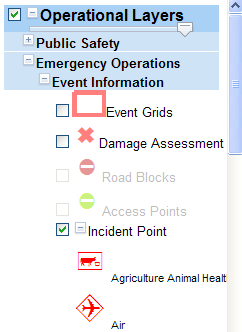
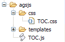

This library is a Table of Contents/Legend widget for ArcGIS Server JavaScript API.
The widget provides a tree-like structure for layer list and legend combination. If the layer has a Simple Renderer, the legend icon is placed in front of layer name, instead of nested below.
It uses checkboxes in addition to +- button to toggle nested legends. When turning on a layer, legend is expanded automatically, and vise versa.

More features:
agsjsTOCOutOfScale
and set
{display: none}
The library has a default css style sheet, but the following CSS class can be overriden for additional style needs:
.agsjsTOCNode,
.agsjsTOCContent,
.agsjsTOCOutOfScale,
.agsjsTOCRootLayer,
.agsjsTOCRootLayerLabel,
.agsjsTOCGroupLayer,
.agsjsTOCGroupLayerLabel,
.agsjsTOCServiceLayer,
.agsjsTOCServiceLayerLabel,
.agsjsTOCLegendLabel
.agsjsTOCIcon
The widget uses
agsjs
as namespace.
Put the downloaded
agsjs
folder under your application.
underneath the agsjs folder, should have file named TOC.js and a sub folder css with file TOC.css. as in 
In your HTML page, link css file agsjs.css under agsjs/css in header section of HTML file:
<link rel="stylesheet" type="text/css" href="../src/agsjs/css/agsjs.css" />
Then inside the section to define djConfig: (make sure the path to folder agsjs is correct)
var djConfig = {
parseOnLoad: true,
packages: [{
"name": "agsjs",
"location": location.pathname.replace(/\/[^/]+$/, "")+'/path/to/agsjs'
}]
};
};
Then in the require section:
...
dojo.require("esri.map");
...
dojo.require("dojo.fx");// needed since jsapi3.0
dojo.require("agsjs.dijit.TOC");
After the script is loaded, in the initilization code,
dojo.connect(map, 'onLayersAddResult', function(results) {
var toc = new agsjs.dijit.TOC({
map: map,
layerInfos: [{
layer: featLayer1,
title: "FeatureLayer1"
}, {
layer: dynaLayer1,
title: "DynamicMapServiceLayer1"
}, {
layer: dynaLayer2,
title: "DynamicMapServiceLayer2",
collapsed: true, // whether this root layer should be collapsed initially, default false.
slider: true // whether to display a transparency slider.
}]
}, 'tocDiv');
toc.startup();
..
}
One TOC type is to hide layer entry when they are out of scale. Simple add display:none to the .agsTOCOutOfScale.
#scaleDiv .agsjsTOCOutOfScale {
display:none;
}
That's it! View example .